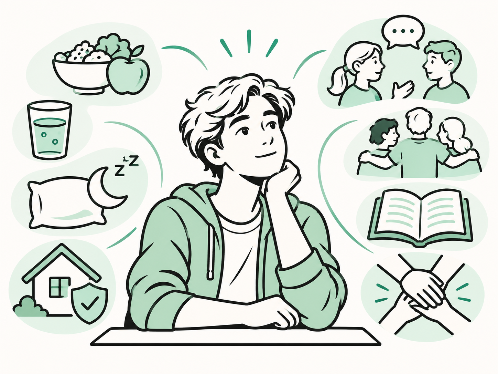

Биологические потребности
Связаны с жизнедеятельностью и сохранением организма.
- Пища и вода — получение веществ, необходимых организму.
- Сон и отдых — восстановление сил.
- Безопасность — защита от опасных воздействий и угроз.
Почему один и тот же человек стремится поесть, отдохнуть, поговорить с друзьями и научиться новому? Поступки связаны с потребностями, но на их выбор влияет и жизнь в обществе.

Потребность — нужда человека в чём-либо необходимом для жизни, благополучия или развития. Она может побуждать к действию: например, голод — к поиску пищи, а желание разобраться в сложной теме — к обучению.
Связаны с жизнедеятельностью и сохранением организма.
Связаны с общением, отношениями и участием в жизни общества.
Важно: разделение помогает сравнивать потребности, но в жизни они тесно связаны. Например, совместный обед удовлетворяет потребность в пище и одновременно создаёт возможность для общения.
Поведение человека — это не только реакция на голод, усталость или другие состояния организма. На выбор действий влияют социальная среда, усвоенные нормы, обучение, отношения с другими людьми и личный опыт.
Эта схема упрощает сложный процесс: человек может учитывать одновременно несколько потребностей, размышлять о последствиях своих поступков и изменять решение.
Ученик устал и хочет отдохнуть, но договорился с одноклассниками подготовить общий проект. Он может распределить задачи, сообщить о необходимости перерыва и вернуться к работе позже.
Вывод: решение учитывает и состояние организма, и договорённости с другими людьми.
Школьник не сразу понимает материал. Он задаёт вопрос, сравнивает примеры и обсуждает решение. Здесь проявляются потребность в обучении, общении и сотрудничестве.
Вывод: социальная среда и приобретённый опыт помогают выбирать способы достижения цели.
Физическое благополучие помогает человеку учиться, общаться и участвовать в совместной деятельности. В свою очередь, поддерживающие отношения и возможность учиться влияют на повседневное самочувствие и развитие.
Например, недостаточный сон может затруднять сосредоточение на уроке, а чувство принадлежности к школьному коллективу помогает ощущать поддержку и включённость в общую работу.
Главная мысль: поведение человека формируется во взаимодействии биологических потребностей и социальных условий. Люди способны учиться, учитывать правила и последствия поступков, договариваться и сознательно выбирать действия.
После длительной прогулки школьники захотели поесть и договорились вместе приготовить ужин. Какие потребности проявляются?
Потребность в пище относится к биологическим. Общение, распределение обязанностей и совместная деятельность — к социальным. В одной ситуации проявляются обе группы.
Два человека одинаково устали, но выбрали разные способы отдыха. Почему так может происходить?
Биологическое состояние может быть сходным, однако предпочтения и действия зависят также от привычек, прошлого опыта, текущих обстоятельств и социальной среды.
Почему нельзя объяснять поведение человека только его биологическими потребностями?
Потому что человек живёт в обществе, учится, усваивает нормы, взаимодействует с другими и на основе личного опыта выбирает способы действия. Биологические и социальные факторы действуют совместно.